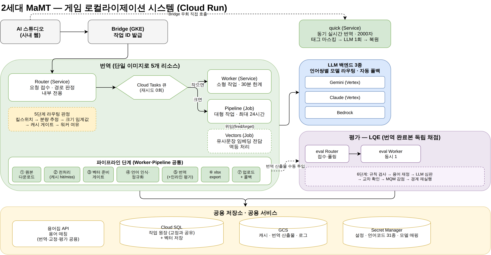
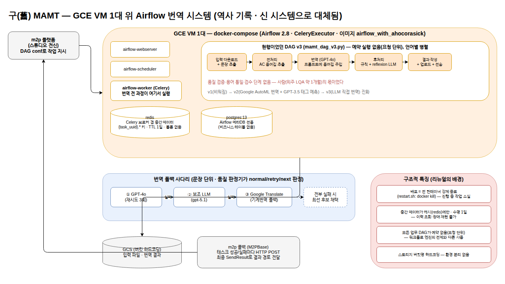
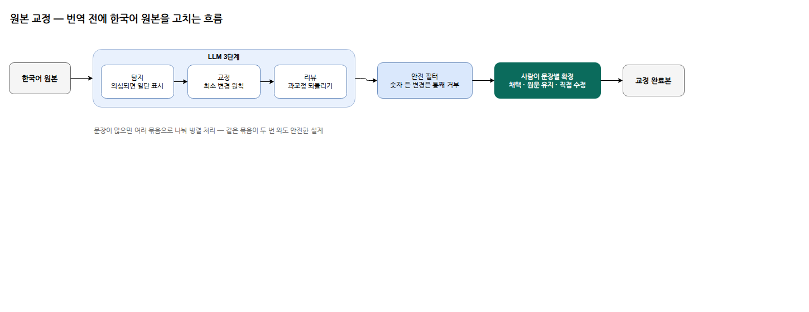
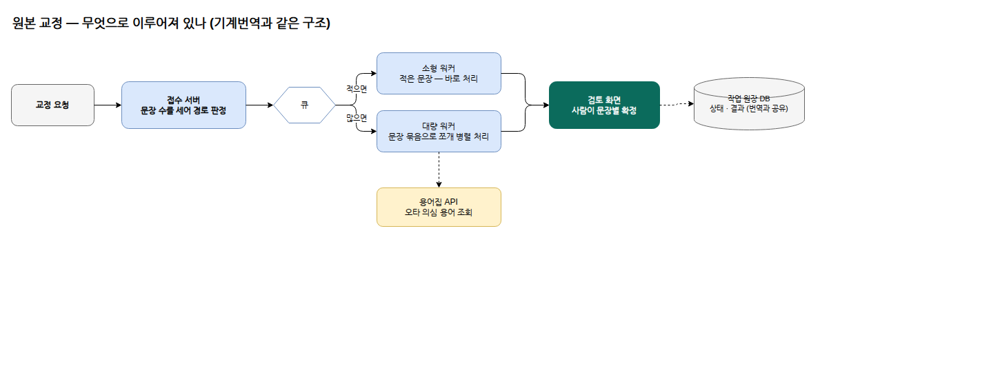
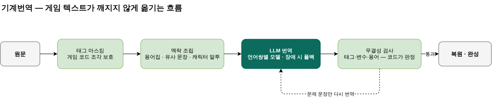
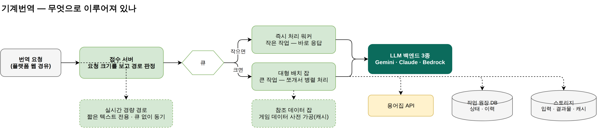
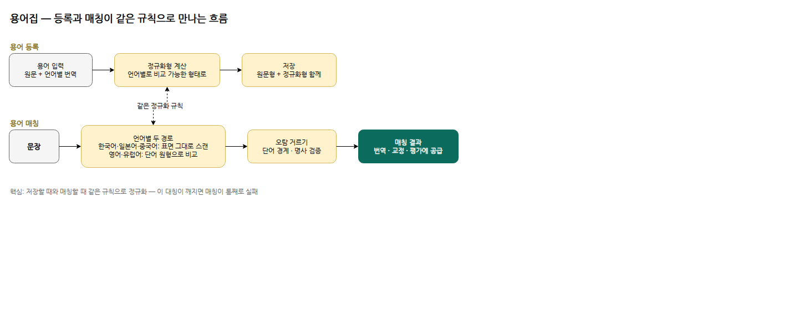
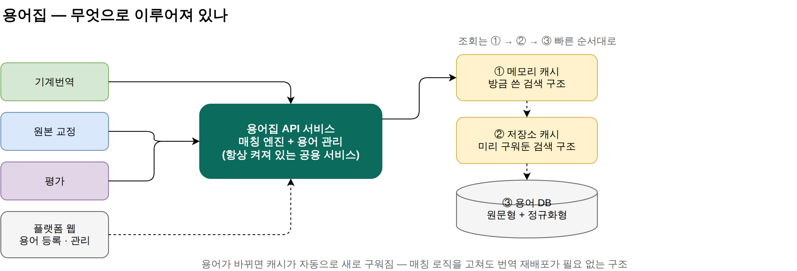
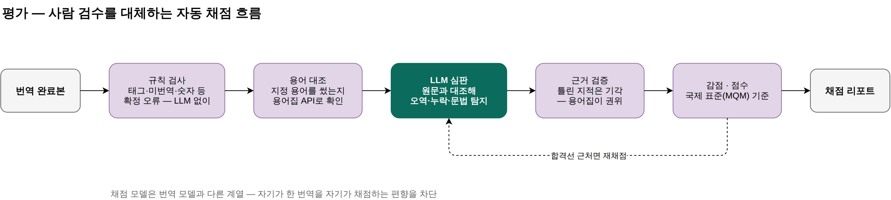
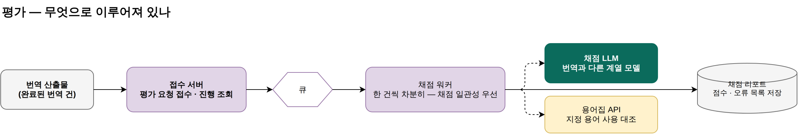

MarbleAI는 게임 로컬라이제이션을 위한 사내 AI 플랫폼으로, 음성과 언어 두 파트로 이뤄져 있습니다. 저는 언어 파트(MaMT)를 리딩합니다. 게임을 전 세계로 퍼블리싱하려면 수만 문장을 최대 31개 언어로 옮겨야 합니다. 사람 번역으로 전부 감당하기에는 비용과 시간이 촉박해, 일부 메이저 언어를 제외한 대부분을 LLM 기반 기계번역이 맡고 있습니다 — 최근에는 메이저 언어까지 기계번역을 도입하는 추세입니다.
그런데 1세대 MaMT는 이름 그대로 기계번역 한 단계뿐이었고, 앞뒤 공정은 사람과 외주에 남아 있었습니다. 저는 리드로서 전면 재설계를 결정하고 교정·기계번역·용어집·평가 4개 시스템 체제로의 전환을 이끌었습니다. 그중 기계번역·용어집·평가는 직접 구현해 지금까지 운영·개선하고 있습니다.
고쳐야 하는 규모가 너무 방대하다고 판단하여 전면 재설계를 결정했습니다.
01확장성02배포Cloud Composer, GKE, Cloud Run 세 가지를 고려했고, Cloud Run을 택했습니다. Composer는 필요한 기능에 비해 과하고 비쌌습니다. GKE는 상대적으로 유지보수에 사람 인력이 더 들어간다고 판단했습니다.
전체 번역 작업 중 60%가 100문장 미만이었습니다. 요청 빈도보다 한 건의 크기가 중요했으므로, 작은 작업은 Cloud Run Service로, 큰 작업은 Cloud Run Job으로 처리되는 분기를 만들었습니다.
배포는 GitHub Actions로 CI/CD를 간단히 할 수 있게 했습니다.
03운영비용모든 수정에 사람이 직접 관여할 필요는 없다고 판단했습니다. 흩어져 있던 로그를 작업 ID별로 한곳에 모으고, ID만 넣으면 로그를 읽어 문제를 진단해 주는 Claude Code 스킬을 만들었습니다.
04용어집용어집도 원활한 패치와 관리를 위해 별도 서비스로 분리하고, DB를 만들어 관리하도록 했습니다. 덕분에 교정, 평가도 같은 용어집을 쓸 수 있게 됐습니다.
05품질 검증기계번역에까지 사람 평가를 할 필요는 없다고 판단했습니다. 평가 기준은 이미 사내에 있었으므로, 그 기준대로 채점하는 LLM 기반 평가기를 만들었습니다.
여기에 하나를 더했습니다 — 원본 교정. 한국어 원본의 오탈자와 잘못된 용어는 번역을 거치면 모든 언어로 증폭됩니다. 번역 앞단에서 먼저 걸러야 한다고 봤습니다.
모든 판단의 기준은 같았습니다 — 로컬라이제이션의 자동화, 그리고 운영 비용 최소화.
그렇게 만들어진 현행 구조 (클릭해 크게 보기)

네 시스템과 그것들이 공유하는 기반입니다. 블록마다 제 역할(직접 구현 / 리딩)을 밝혔습니다.
네 시스템이 같은 뼈대를 공유합니다 — 접수 서버가 요청 크기를 판정해 작은 건 즉시, 큰 건 쪼개서 병렬 배치로 보내고, 모든 구간이 큐를 경유하며, 상태·이력은 공유 원장 하나에 남습니다. 배포는 무중단 전환에 문제 시 즉시 복구, 재시도 정책은 시스템 특성별로 다르게 설계했습니다(기계번역·평가 0회, 교정만 멱등 설계 후 허용). 이 구조 덕에 시스템이 늘어도 운영의 멘탈 모델은 하나입니다.
현행 전체 지형
리뉴얼 전 구조 (참고)

한국어 원본의 오탈자·잘못된 용어는 번역을 거치면 모든 언어로 증폭됩니다. 이를 앞단에서 잡되, LLM 3단계(탐지→교정→리뷰)가 고친 것도 그대로 믿지 않습니다 — 숫자가 든 변경은 통째로 거부하고(게임 데이터 보호가 교정률보다 우선), 최종 채택은 사람이 문장별로 확정합니다.
처리 흐름

구성

핵심은 번역 전후의 보호 장치입니다. 번역 전엔 게임이 깨질 수 있는 코드 조각을 가리고 용어집·유사 문장·캐릭터 말투를 모아 프롬프트를 조립하며, 번역 후엔 태그·변수·용어가 온전한지 LLM이 아니라 코드가 검사해 문제 문장만 다시 번역합니다. 모델은 87개 언어 조합별로 관리하고, 백엔드 3종(Gemini·Claude·AWS Bedrock)을 운영해 한 벤더에 묶이지 않습니다.
처리 흐름

구성

등록할 때 언어별 정규화형을 미리 계산해 저장하고, 매칭할 때 같은 규칙으로 비교합니다 — 이 대칭이 시스템의 심장입니다. 매칭은 언어 특성에 따라 두 경로(한·일·중은 표면 스캔, 영어·유럽어는 단어 원형)로 갈리고, 단어 경계·명사 검증으로 오탐을 거릅니다. 결과는 기계번역·교정·평가가 같은 API로 공유합니다.
처리 흐름

구성

확실한 오류는 규칙이 LLM 없이 판정하고, 애매한 것만 LLM 심판이 원문과 대조해 탐지하며, 심판의 주장도 근거를 검증해 틀린 지적은 기각합니다(용어집이 권위). 감점은 번역 품질 국제 표준(MQM) 기반 13개 항목이고, 합격선 근처 점수는 재채점해 요동을 막습니다. 채점 모델은 번역 모델과 다른 계열 — 자기 채점 편향의 구조적 차단입니다.
처리 흐름

구성
